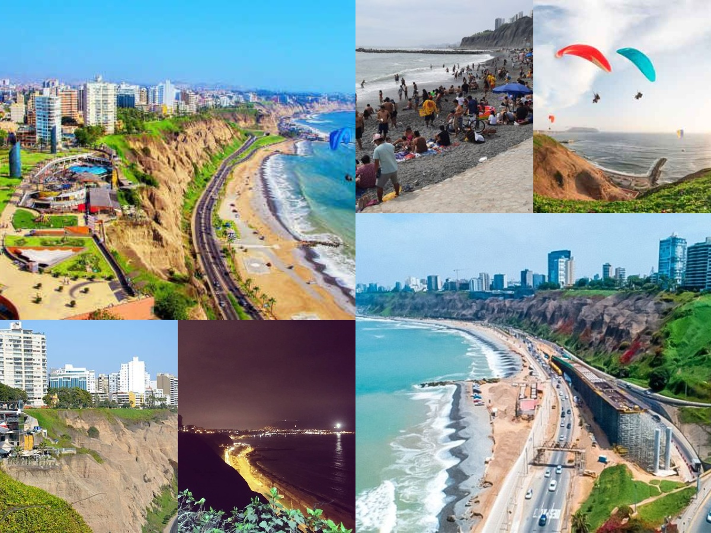

Tour en Costa Verde
El Circuito de Playas de la Costa Verde, popularmente conocido como la Costa Verde, es una vía ubicada en la ciudad de Lima, capital del Perú y la ciudad del Callao, el Primer Puerto, recorriendo así la parte sur y central del litoral limeño y chalaco uniendo los distritos de La Punta, Callao, La Perla, San Miguel, Magdalena del Mar, San Isidro, Miraflores, Barranco y Chorrillos.
Porque escogernos?
Nos caracterismos por:
- Profesionales del turismo.
- Hacemos turismo sostenible.
- Certificados internacionalmente.
- Mejor precio garantizado.
- Asesoría gratuita 24/7.
- Compromiso de calidad y servicio.
- Amigables con el ambiente.
- Amamos nuestro trabajo.
Que hacer?
- Nadar en la hermosa playa.
- Caminar por el hermoso recorrido de la costa.
- Paracaidas deportivo.
- Comer en restaurantes con una hermosa vista al mar.
- Tomarse fotos.